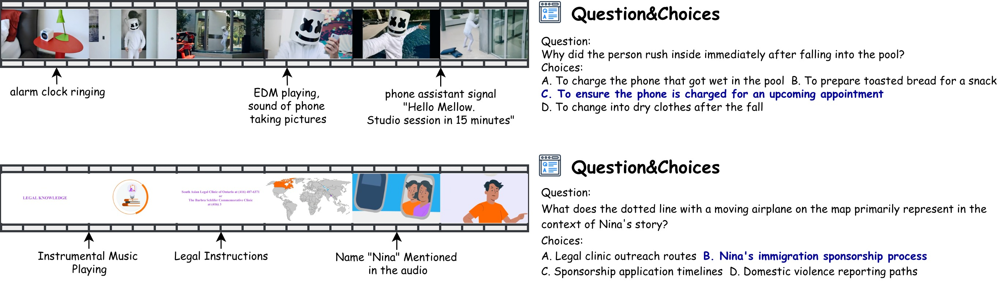
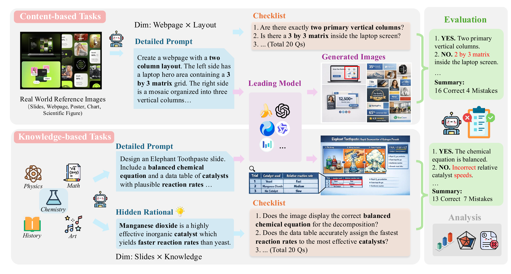
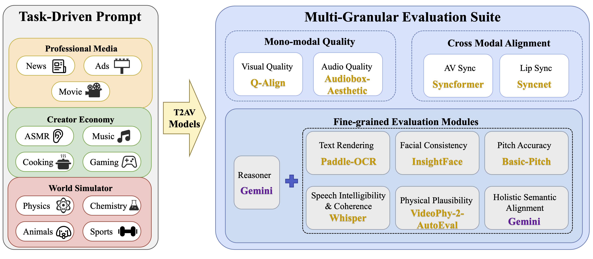
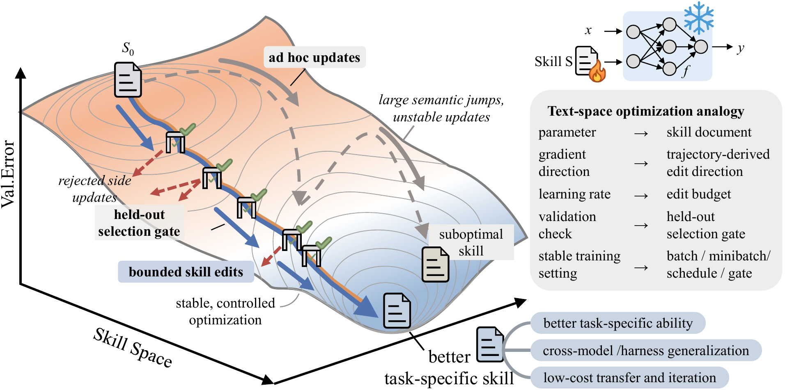

About Me
I am a final-year undergraduate student at the School of Computer Science, Fudan University, supervised by Prof. Zuxuan Wu. Currently, I am also a Research Intern at the Shanghai System and Engineering Group, Microsoft Research Asia (MSRA), working with Senior Research SDE Yifan Yang.
My research interests lie in Multimodal Large Language Models (MLLMs), Audio-Visual Generation, and building Physics-Grounded World Models. I aim to bridge the gap between multimodal reasoning and high-fidelity generation, enabling AI systems to perceive, reason about, and simulate the physical world with temporal consistency.
News
- [May. 2026] Released SkillOpt, which quickly attracted 5K+ GitHub stars and broad community attention.
- [May. 2026] AVGen-Bench was accepted to ICML 2026.
- [Apr. 2026] Released AVGen-Bench benchmark (arXiv preprint).
- [Mar. 2026] Released BizGenEval benchmark (arXiv preprint).
- [Jun. 2025] Joined Microsoft Research Asia (MSRA) as a Research Intern.
- [May. 2025] Released Daily-Omni benchmark (arXiv preprint).
Research
Selected Publications

Daily-Omni is a multiple-choice audio-visual QA benchmark with 684 real-world videos and 1,197 questions across 6 task families that explicitly require cross-modal temporal reasoning. We build it with a semi-automatic pipeline covering annotation, cross-modal consistency refinement, temporal alignment elicitation, and text-only leakage filtering, followed by human verification. The benchmark includes diagnostic evaluation over 24 foundation models under 37 model-modality settings, together with a training-free modular baseline built from off-the-shelf unimodal models. Results show that many end-to-end MLLMs still struggle on alignment-critical questions, highlighting robust cross-modal temporal alignment as an open challenge.

BizGenEval benchmarks image generation models on real-world commercial design tasks with dense textual, layout, attribute-binding, and knowledge constraints. It covers 20 evaluation tasks across slides, charts, webpages, posters, and scientific figures, with human-verified checklist-based scoring for systematic comparison.

AVGen-Bench is a task-driven benchmark for evaluating text-to-audio-video generation with fine-grained measurements over visual quality, audio quality, synchronization, text fidelity, and physical plausibility. It emphasizes joint audio-video assessment and more complex task-oriented prompts than prior benchmarks.

SkillOpt treats a compact natural-language skill document as the trainable state of a frozen agent, optimizing it through scored rollouts, bounded textual edits, and held-out validation gates. The learned skills are reusable deployment artifacts that improve agent performance without changing model weights or adding inference-time model calls.
Ongoing Research
Architecting a unified autoregressive model extending Qwen2.5-Omni with discrete audio and video tokens (via FSQ-VAEs). Focusing on synthesizing high-fidelity video with precisely aligned audio, targeting performance comparable to proprietary systems like Google’s Veo3. The model aims to leverage pre-trained reasoning priors to improve generative physical consistency.
Education
-
Fudan University, Shanghai, China Sep. 2022 –
Present
B.S. in Computer Science and Technology